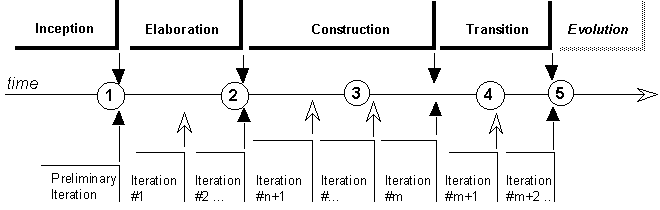

Roles and Activities >
Developer Role Set >
Roles and Activities >
Developer Role Set >
 Architecture Reviewer >
Architecture Reviewer >
 Review the Architecture
Review the Architecture
Roles and Activities >
Developer Role Set >
Architecture Reviewer >
Review the Architecture
Activity:
| |||||||||||||||||
Purpose
|
|
| Steps | |
| Input Artifacts: | Resulting Artifacts: |
| Role: Architecture Reviewer | |
| Guidelines: | |
| Checkpoints: | |
| Workflow Details: |
Seen from 20,000 feet there is not much that distinguishes a software architecture assessment from any other assessment or review.
However, one important characteristic of the software architecture is the lack of specific measurements for many architectural quality attributes—only a few architectural qualities can be objectively measured. Performance is an example where measurement is possible. Other qualities are more qualitative or subjective: conceptual integrity for example. Moreover, it is often hard to decide what a metric means in absence of other data or reference for comparison. If a reference system is available and understood by the target audience, it is often convenient to express some of the results of the review relative to this reference system. This may happen in a context where the system under design can be compared to an earlier design.
When in the life-cycle this assessment takes place also affects its purpose or usefulness.

Diverse approaches can be used to do the review:
Obtain (or build) a representation of the architecture, then ask questions and reason based on this representation.
There is a wide range of situations here, from the organization that are very architecture-literate and will provide some intelligible description to start with, to organizations where you need to identify who is the software architect (even hidden under some other name), and need to extract the information from that person, to the place where software architecture is a totally unknown concept. This process is then called "mining the architecture," and in practice looks literally like that: digging it out the software or its documentation with a pickax, looking at source code, interfaces, configuration data, etc.
One model that can be used to organize the representation is in the format of the architectural views presented in the Software Architecture Document: the logical view organizes the main classes (the object model), the process view describes the main threads of control and how they communicate, the development view shows the various subsystems and their dependencies, the physical view describes the mapping of elements of the other views onto one or several physical configuration. Organize issues alongside the various views.
Establish the list of information—data, measurements—that is needed for the reasoning, get the information, and compare this information to either the requirements or some accepted reference standard. This applies well for investigating certain quality attributes, such as performance, or robustness.
This is the systematic "what if" approach. Transform the general questions being asked into a set of scenarios the system should go through and ask questions based on the scenarios. Example of such scenarios are:
The advantage of such an approach is that it puts the task in a very concrete perspective, understandable by all parties. It also allows to probe into omissions or flaws into the requirements, especially when the requirements are informal or unwritten or very general and terse. The disadvantage is that it does not grab the architecture itself as the object being reviewed, but takes the system as a black box into which we are only sending some probes.
In practice, things are not so clearly separated, and we end up doing a bit of all three approaches.
Uncovering potential issues is mostly done by human judgment based upon knowledge and experience. Certain failure patterns are repeated from project to project, from organization to organization. Certain heuristics can be used to uncover problem areas. Check-lists can be useful (some very generic ones are proposed later), as well as results from previous reviews, if any.
Capture potential issues as they appear, describing them in a neutral tone—no finger pointing, no "catastrophism’. You may use little cardboard cards as do AT&T reviewers, or as we do with CRC cards, to help prioritizing, organizing, eliminating.
Later, sort the candidate issues by decreasing scope or impact, and if there are many, tackle first the ones that are directly related to the question at hand, leaving the "other suggestions" for later if time permits. Then assert the reality of the problem: very often one can perceive a problem, but it may not be. We just have not spoken to the right person, looked at the right piece of information. Sort again. Ensure multiple data points to verify the reality of a problem. (Inexperienced assessors tend to be too single-threaded.)
When the problem has been confirmed, rapidly examine what could eliminate the problem, without necessary trying to do on-the-fly redesign of the system. Write down potential simplifications, reuse, alternatives: buy vs. build.
Purpose
|
After the review, allocate responsibility for each defect identified.
"Responsibility" in this case may not be to fix the defect, but to
coordinate additional investigation of alternatives, or to coordinate the
resolution of the defect if it is far-reaching or broad in scope.
|
Rational Unified
Process
|